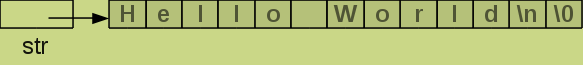
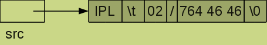
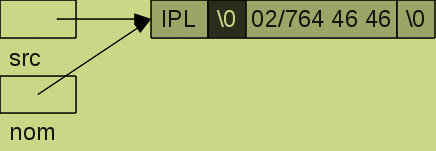
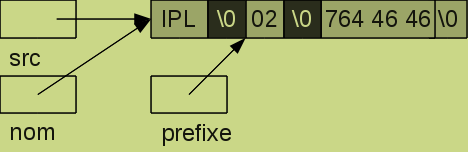
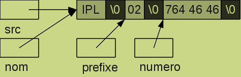
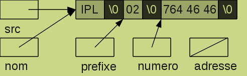
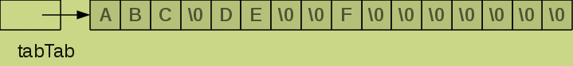
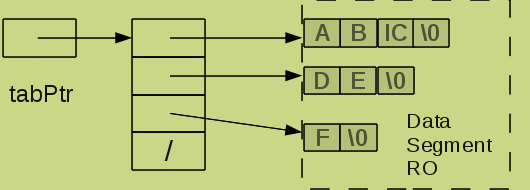
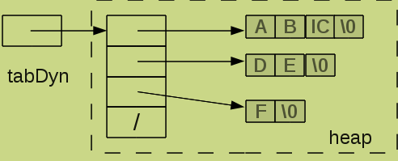

Langage C
Les chaînes de caractères
Les chaînes de caractères
Introduction
Contrairement à d'autres langage, le type string n'existe pas en C. Or cette notion est nécessaire pour permettre une interaction avec l'utilisateur qui s'exprime avec des mots. Il est donc important de pouvoir représenter et manipuler aisément les chaînes de caractères.
Le langage C va utiliser des tableaux de caractères pour stocker les chaînes de caractères. Mais dans le but de simplifier les traitements de ces tableaux, il va introduire une particularité à ces tableaux : le tableau des caractères qui représente la chaîne sera toujours terminé par un caractère spécial, '\0' (0X00).
Nous pouvons donc représenter la chaîne "Hello World\n" par le tableau suivant .
Nous remarquons que le nombre de bytes utilisé dans ce tableau est 13, même si la chaîne ne compte que 12 caractères.
Définition de chaînes de caractères
L'utilisation de chaînes de caractères nécessite la définition de variables, soit sous forme d'un tableau de caractères char mot[25], soit sous la forme d'un pointeur sur un caractère char *mot, la différence se situe au niveau de la gestion de la mémoire. La définition d'un tableau de caractères réserve un certain nombre de bytes en mémoire (indiqué par la taille du tableau); cela impose de copier les caractères dans le tableau. Par contre, la définition d'un pointeur sur un caractère ne réserve aucun espace mémoire pour stocker la chaîne, mais uniquement un pointeur, une adresse où retrouver la chaîne de caractères. Pour utiliser ce pointeur, il est nécessaire de l'affecter soit avec l'adresse d'une zone mémoire allouée (malloc), soit avec un tableau, soit avec un autre pointeur ou encore avec un littéral déclaré entre les caractères " (défini dans le data segment RO).
Traitement des chaînes de caractères
Le premier point sur lequel il est nécessaire d'insister est qu'une chaîne de caractères est un tableau de caractères et que toutes les remarques énoncées à propos des tableaux restent d'application, comme le fait de s'assurer que la zone mémoire est suffisante pour stocker tous les caractères du tabeau, en n'oubliant pas de compter le caractère fin de chaîne '\0'. Dans cette optique, il n'est pas inutile de rappeler que l'espace mémoire peut être réservé soit à la compilation char ligne[257] lorsque l'on connaît la taille du tableau et qu'elle restera fixe durant la vie du processus, soit par une allocation dynamique (si la taille est inconnue à la compilation ou bien que cette taille peut varier en cours d'exécution). Dans l'exemple suivant, nous définissons un tableau de 257 caractères permettant de stocker en mémoire une ligne lue sur stdin, comme nous ne connaissons pas à l'avance la taille de la ligne à lire, nous choisissons une taille que nous espérons suffisante et en lien avec les caractéristiques du système (la taille du buffer de lecture, multiple de 256).
char ligne[257];
while(fgets(ligne, 257, stdin) != NULL) {
printf("La chaîne lue est : %s", ligne);
}
La fonction fgets lit sur stdin une ligne (jusque et y compris le caractère '\n') et stocke les caractères lus dans le tableau ligne, avec un maximum de 255 caractères, pour laisser une place au caractère '\0' ajouté par la fonction elle-même; si l'utilisateur a introduit une ligne plus longue, la suite de la ligne sera lue lors de l'appel suivant de la fonction fgets.
Plusieurs fonctions permettent l'affichage d'une chaîne de caractères; dans un premier temps, nous utiliserons la fonction printf. Le format à utiliser est le format %s.
Un autre aspect à prendre en compte lors de l'utilisation des chaînes de caractères est que le langage C ne prévoit aucunement le stockage de la taille de la chaîne, cette information doit être gérée par l'application elle-même.
Les littéraux représentant une chaîne de caractères sont encadrés du caractère ", il sont stockés dans un segment de mémoire RO.
Les fonctions standards
Comme il n'existe pas de type String en C, les opérations que l'on désire accomplir sur les chaînes de caractères ne peuvent pas être réalisées au moyen d'opérateurs : pas d'opérateur de concaténation, pas d'opérateur de comparaison, etc
Pourtant ces traitements sont nécessaires. La solution mise en place par les concepteurs du langage est de proposer des fonctions standards, adaptées au système sur lequel tourne l'application. La déclaration de ces fonctions est reprise dans le fichier d'entête string.h qu'il est donc impératif d'inclure dans chaque programme qui manipule des chaînes de caractères.
Les fonctions de base
Ces fonctions reçoivent une ou deux chaînes en paramètre.
- size_t strlen(const char *s)
- fonction qui calcule la longueur (le nombre de caractères) de la chaîne passée en paramètre, size_t est une rédéfinition d'un type int.
- char *strcpy(char *dest, const char *src)
- fonction qui copie la chaîne contenue à l'adresse src dans la zone mémoire dont l'adresse est dest; le programme doit s'assurer que dest est suffisamment grande pour contenir le nombre de caractères de la source plus 1.
- char *strcat(char *dest, const char *src)
- fonction qui concatène la chaîne contenue à l'adresse src à la chaîne dont l'adresse est dest; le programme doit s'assurer que la longueur de la zone mémoire dest est au moins égale à la somme des longueurs des deux chaînes plus 1.
- int strcmp(const char *dest, const char *src)
- fonction qui compare deux chaînes de caractères;
la valeur renvoyée sera 0 si les contenus des chaînes sont égaux,
inférieure à 0 si la première est plus petite suivant l'ordre alphabétique, strictement positive si la première est supérieure.
Attention, il ne faut pas confondre avec la comparaison
if (p == q){ printf(" ??????????????????\n"); }qui compare 2 pointeurs, c-à-d 2 adresses mémoires.
Les fonctions de base avec une taille maximale
Les fonctions de base ne permettent pas de limiter le traitement des chaînes à une certaine taille, ce qui peut être gênant. La librairie standard comprend d'autres fonctions qui reçoivent un paramètre supplémentaire, une taille maximale.
- char *strncpy(char *dest, const char *src, size_t n)
- fonction qui copie la chaîne contenue à l'adresse src dans la zone mémoire dont l'adresse est dest; La copie se termine au \0 ou après n caractères, mais dans ce dernier cas, le caractère \0 n'est pas recopié dans le tableau dest.
- char *strncat(char *dest, const char *src, size_t n)
- fonction qui concatène la chaîne contenue à l'adresse src à la chaîne dont l'adresse est dest; La concaténation se termine au \0 ou après n caractères, mais dans ce dernier cas, le caractère \0 n'est pas recopié dans le tableau dest.
- int strncmp(const char *dest, const char *src, size_t n)
- fonction qui compare deux chaînes de caractères; la valeur renvoyée sur nulle si les chaînes sont égales, inférieure à 0 si la première est plus petite suivant l'ordre alphabétique, plus grand que 0 si la première est supérieure.
Les fonctions de recherches
- char *strchr(const char *chaine, int car)
- fonction qui cherche le caractère car dans la chaîne chaine, la fonction retourne l'adresse de la première occurrence du caractère ou NULL si le caractère n'est pas trouvé.
- char *strrchr(const char *chaine, int car)
- fonction qui cherche le caractère car dans la chaîne chaine, la fonction retourne l'adresse de la dernière occurrence du caractère ou NULL si le caractère n'est pas trouvé.
- char *strstr(const char *chaine, const char *sub)
- fonction qui cherche la sous-chaine sub dans la chaîne chaine, la fonction retourne l'adresse de la première occurrence de la sous-chaîne ou NULL si le caractère n'est pas trouvé.
- size_t strspn(const char *chaine, const char *ensemble)
- fonction qui cherche le premier caractère de la chaîne chaine qui n'appartient pas à l'ensemble, la fonction retourne l'indice de ce caractère ou la longueur de la chaîne si tous les caractères sont présents.
- size_t strcspn(const char *chaine, const char *ensemble)
- fonction qui cherche le premier caractère de la chaîne chaine qui appartient à l'ensemble, la fonction retourne l'indice de ce caractère ou la longueur de la chaîne si aucun caractère n'est présent.
- char *strpbrk(const char *chaine, const char *ensemble)
- fonction qui réalise le même traitement que strcspn mais renvoie un pointeur sur le premier caractère de la chaîne chaine qui appartient pas à l'ensemble, ou un pointeur nul si aucun caractère n'est présent.
La fonction strtok
Cette fonction permet de découper une chaîne de caractères en token. Mais son utilisation est très différente du tokenizer de java.
Sa déclaration char * strtok(char *str, const char *delim)
nous apprend que la fonction reçoit 2 arguments,
le premier est la chaîne de caractères à analyser

et le second est une chaîne de caractères reprenant la liste des séparateurs pris en compte pour déterminer le token. La fonction renvoie l'adresse du token.char src[] = "IPL 02/764 46 46";
char *nom;
if ((nom = strtok(src, "\t \r")) == NULL){
fprintf(stderr, "???\n");
return 1;
}
Attention, la fonction va modifier la chaîne source en remplaçant le délimiteur par le caractère \0 qui détermine la fin du token.

Pour obtenir le token suivant, il faut ré-appeler la fonction, mais cette fois le premier argument n'est plus l'adresse d'une chaîne mais le pointeur nul NULL pour spécifier à la fonction que l'on continue de travailler sur la chaîne traitée lors de l'appel précédent. La liste des délimiteurs peut être modifiée lors de chaque appel de la fonction.
char *prefixe;
if ((prefixe = strtok(NULL, "/")) == NULL){
fprintf(stderr, "???\n");
return 1;
}

Si la fonction ne trouve pas le séparateur, elle considère la fin de la chaine source comme le token à renvoyer.
char *numero;
if ((numero = strtok(NULL, ":")) == NULL){
fprintf(stderr, "???\n");
return 1;
}

Lorsque la chaîne est vide, la fonction renvoie un pointeur nul.
char *adresse;
if ((adresse = strtok(NULL, ":;")) == NULL){
fprintf(stderr, "C'est fini ...\n");
return 1;
}

Les fonctions de conversions numériques
La conversion d'une chaîne de caractères en la valeur numérique qu'elle représente peut se faire en utilisant des fonctions de conversion simple double atof(const char *str), int atoi(const char *str), long atol(const char *str), qui ne donnent aucune information sur le résultat ou grâce à des fonctions qui fourniront des informations exploitables pour s'assurer que la conversion est correcte, double strtol(const char *str, char **pptr), long strtol(const char *str, char **pptr, int base), unsigned long strtoul(const char *str, char **pptr, int base), Ces fonctions nécessitent l'inclusion du fichier stdlib.h.
Voici les fonctions de conversions simples
- double atof(const char *str)
- Cette fonction convertit la valeur comprise dans la chaîne str en un nombre double, la conversion se termine au premier caractère qui n'est pas interprétable.
- int atoi(const char *str)
- Cette fonction convertit la valeur comprise dans la chaîne str en un nombre int, la conversion se termine au premier caractère qui n'est pas interprétable.
- int atol(const char *str)
- Cette fonction convertit la valeur comprise dans la chaîne str en un nombre long, la conversion se termine au premier caractère qui n'est pas interprétable.
Et celles qui convertissent la chaine avec une référence sur le caractère qui cause l'arrêt de la conversion. Dans ces fonctions, le paramètre char **pptr permet à la fonction de renvoyer l'adresse du caractère qui a causé l'arrêt de la conversion. De plus la fonction positionne la variable système errno à un code d'erreur qui indique la raison de l'arrêt de la conversion.
- double strtod(const char *str, char **pptr)
- Cette fonction convertit la valeur comprise dans la chaîne str en un nombre double, la conversion se termine au premier caractère qui n'est pas interprétable, son adresse est renvoyée dans le paramètre pptr
- long strtol(const char *str, char **pptr, int base)
- Cette fonction convertit la valeur comprise dans la chaîne str en un nombre long int. Elle convertit un nombre encodé dans une base comprise entre 2 et 36. La conversion se termine au premier caractère qui n'est pas interprétable.
- int strtoul(const char *str, char **pptr, int base)
- Cette fonction convertit la valeur comprise dans la chaîne str en un nombre unsigned long int. Elle convertit un nombre encodé dans une base comprise entre 2 et 36. La conversion se termine au premier caractère qui n'est pas interprétable.
Les fonctions de traitements sur la mémoire
Semblables aux fonctions de traitement des chaînes de caractères, elles utilisent des zones mémoires non spécifiques aux chaînes de caractères et donc se basent sur une dimension pour limiter leur action.
- void *memchr(const void *ptr, int car , size_t n)
- fonction qui cherche le caractère car dans la zone mémoire d'adresse ptr sur n bytes, la fonction retourne l'adresse de la première occurrence du caractère ou NULL si le caractère n'est pas trouvé.
- int memcmp(const void *ptr1, const void *ptr2, size_t n)
- fonction qui compare deux zones de mémoire.
- char *memcpy(void *dest, const void *src , size_t n)
- fonction qui copie une zone mémoire dans une autre.
- char *memmove(void *dest, const void *src , size_t n)
- fonction qui copie une zone mémoire dans une autre, les zones mémoire peuvent se superposer. La fonction retourne l'adresse de la première occurrence du caractère ou NULL si le caractère n'est pas trouvé.
- void *memset(void *ptr, int car , size_t n)
- fonction qui place n caractères car dans la zone mémoire ptr.
Tableaux de chaînes de caractères
En accord avec la définition d'une chaîne de caractères, nous comprenons aisément qu'un tableau de chaînes de caractères est en fait un tableau de tableaux de caractères, peut-être un peu particulier.
Tables définies à la compilation
Une table de chaînes de caractères peut être définie de deux manières différentes, soit comme une table de tables de caractères
char tabTab[4][4]={"ABC", "DE", "F"};

soit comme une table de pointeurs sur un caractère
char *tabPtr[4]={"ABC", "DE", "F"};

Dans le second cas, la table tabPtr contient des adresses de chaines stockées dans le Data Segment, tandis que dans le premier cas la table tabTab, contient des tableaux de caractères.
Tables dynamiques
Pour allouer une table de chaînes de caractères char **table dynamiquement, il faut d'abord allouer la table des pointeurs table=(char **)malloc((n+1)*sizeof(char*)) où n+1 permet de tenir compte du pointeur nul qui marquera la fin de la table et ensuite pour chaque pointeur, allouer la mémoire suffisante et recopier la chaîne.
char **tabDyn;
if ((tabDyn = (char **)malloc(4*sizeof(char*))) == NULL){
perror("Malloc KO\n");
return1;
}
if ((*tabDyn = (char *)malloc((strlen(tableDesPointeurs[0])+1)*sizeof(char))) == NULL){
perror("Malloc KO\n");
return1;
}
strcpy(*tabDyn, *tableDesPointeurs);
....

Un cas particulier, le tableau des arguments du programme
Lorsque l'utilisateur veut passer des arguments au programme, il doit utiliser une structure particulière, un tableau des arguments déclaré comme paramètre de la fonction principale main. Chaque argument de l'application est une chaîne de caractères qui est reprise dans un tableau, le premier élément de cette table, l'élément 0 du tableau est le nom du processus. l'autre paramètre de cette fonction main, de type int donne le nombre de chaînes dans la table, à savoir le nombre des arguments + 1. Le dernier élément de la table est un pointeur nul pour marquer la fin de la table.
Si l'utilisateur appelle le programme suivant
int main(int argc, char *argv[]){
printf("Le nom du processus est %s\n", *argv);
if (argc == 3){
printf("Le nom du premier argument est %s\n", *(argv+1));
printf("Le nom du second argument est %s\n", argv[2]);
}
}
en introduisant dans le shell la commande suivante :
./affiche arg1 arg2voici le résultat qui s'affichera
Le nom du processus est ./affiche Le nom du premier argument est arg1 Le nom du second argument est arg2
Traitement des caractères
Avant de terminer ce chapitre, passons rapidement en revue quelques macros de traitements d'un caractère.
Les traitements essentiels des caractères ont été codés dans des macros, définies dans le fichier d'entête <ctype.h>. Ces macros permettent de caractériser le caractère (stocké dans un char ou stocké dans un int), comme
- isalpha(c)
- teste si c est une lettre
- islower(c)
- teste si c est une lettre minuscule
- isupper(c)
- teste si c est une lettre majuscule
- isdigit(c)
- teste si c est une chiffre
- isalnum(c)
- teste si c est une lettre ou un chiffre
- isxdigit(c)
- teste si c est une chiffre hexadécimal
- ispunct(c)
- teste si c est un caractère de ponctuation
- isprint(c)
- teste si c est un caractère imprimable (32 à 126)
- isgraph(c)
- teste si c est un caractère imprimable visible (33 à 126)
- iscntrl(c)
- teste si c est un caractère de contrôle (0 à 31 ou 127)
- isspace(c)
- teste si c est un espacement (' ', '\t', '\n', '\r', '\f', '\v')
- isascii(c)
- teste si c est compris entre 0 et 127
- tolower(c)
- renvoie le caractère en minuscule
- toupper(c)
- renvoie le caractère en majuscule
Bernard Henriet © 2015